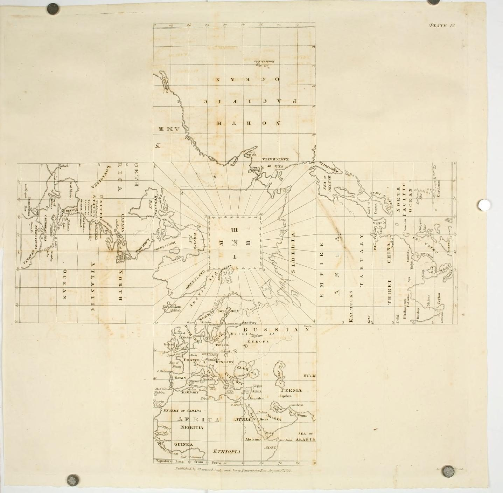
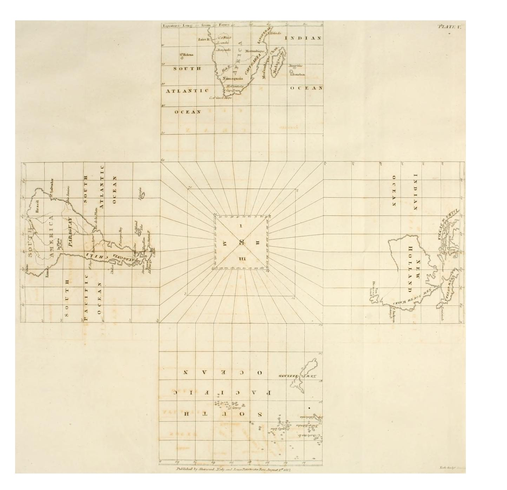

Trabajo Fin de Grado · ETSA Sevilla · 2026
Grand Tour
El viaje como herramienta en la formación del arquitecto
Daniel Bilbao Marcos
Tutora: Beatriz Zapico Blanco
Giovanni Paolo Panini, Interior del Panteón, Roma, c. 1734. National Gallery of Art, Washington (dominio público).
EntrarGrand TourEl viaje como herramienta en la formación del arquitecto
Dedicado a
Antonio Marcos Estrada
«El que lee mucho y anda mucho, ve mucho y sabe mucho».Miguel de Cervantes Saavedra, Don Quijote de la Mancha, parte II, cap. XXV.




Resumen
El viaje ha sido, desde el Grand Tour del siglo XVIII, uno de los mecanismos fundamentales de formación del arquitecto. Este trabajo estudia los viajes iniciáticos de cinco arquitectos a lo largo de más de dos siglos: John Soane en Italia (1778-1780), Charles Garnier en España (1868), Le Corbusier en su Viaje de Oriente (1911), Jørn Utzon en China (1958) y Tadao Ando en su recorrido de Osaka a Europa (1965). A partir de fuentes primarias y de archivo (cuadernos de viaje, dibujos, correspondencia, fotografías y escritos autobiográficos) se reconstruyen los itinerarios con la mayor precisión posible y se representan cartográficamente. Como marco interpretativo se adopta la teoría del aprendizaje experiencial de David Kolb, que permite leer el viaje como un ciclo de experiencia, reflexión, conceptualización y aplicación en la obra posterior. El estudio comparado de los cinco casos permite examinar en qué medida cada viaje responde a un carácter iniciático y cómo ha evolucionado esta práctica desde el modelo clásico del Grand Tour hasta los recorridos globales del siglo XX.
Palabras clave: viaje iniciático, Grand Tour, formación del arquitecto, aprendizaje experiencial, reconstrucción de itinerarios, cartografía.
Abstract
Since the eighteenth-century Grand Tour, travel has been one of the key mechanisms in an architect’s education. This thesis examines the initiatory journeys of five architects across more than two centuries: John Soane in Italy (1778-1780), Charles Garnier in Spain (1868), Le Corbusier on his Voyage d’Orient (1911), Jørn Utzon in China (1958) and Tadao Ando on his journey from Osaka to Europe (1965). Drawing on primary and archival sources (sketchbooks, drawings, correspondence, photographs and autobiographical writings), the itineraries are reconstructed as precisely as possible and mapped. David Kolb’s experiential learning theory provides the interpretive framework, allowing each journey to be read as a cycle of experience, reflection, conceptualisation and application in the architect’s later work. A comparative study of the five cases assesses the extent to which each journey can be considered initiatory, and traces how this practice evolved from the classical Grand Tour model to the global journeys of the twentieth century.
Keywords: initiatory journey, Grand Tour, architectural education, experiential learning, itinerary reconstruction, cartography.
Cinco viajes, cinco formas de viajar
Cada caso de estudio representa uno de los tipos de viaje propuestos en el trabajo. Pulsa en un arquitecto para ver su itinerario, su eje cronológico y el análisis completo.
Contenido
El texto íntegro del TFG, con los mapas y ejes cronológicos en versión interactiva.